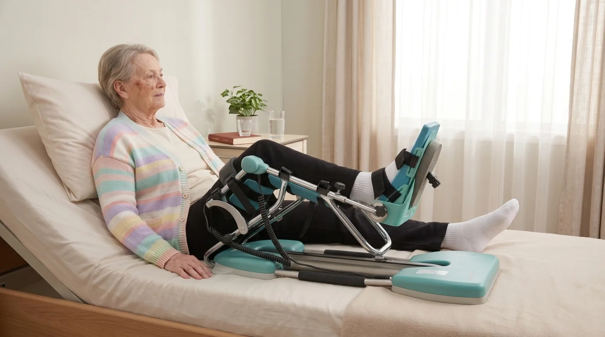

Een knie-osteotomie — ook wel HTO (high tibial osteotomy) of ascorrectie genoemd — is een gewrichtsparende ingreep waarbij uw chirurg het scheenbeen doorzaagt en in een nieuwe stand vastzet met een plaat. Het doel is om de belasting van de knie te verplaatsen weg van het versleten compartiment. Tijdens de wekenlange genezing van het bot mag u uw been niet of slechts gedeeltelijk belasten — en juist dan is een kinetec een waardevol hulpmiddel om uw kniegewricht soepel te houden.
Wat is een osteotomie?
Bij een HTO wordt de bovenkant van het scheenbeen (tibia) doorgezaagd en gecorrigeerd, meestal om een O-been (varusstand) te corrigeren bij beginnende artrose aan de binnenzijde van de knie. Door de belasting te verplaatsen naar het gezonde compartiment, kan een knieprothese vaak 10 tot 15 jaar uitgesteld worden.
Waarom een Kinetec na een Knie-Osteotomie?
Een osteotomie is anders dan een knieprothese of een artroscopie: het kniegewricht zelf wordt niet vervangen, maar het bot eronder wordt herschikt. Toch ontstaat er zwelling in de knie, en de wekenlange beperkte belasting kan leiden tot stijfheid van het gewricht. De kinetec CPM machine beweegt uw knie passief, zonder dat u kracht zet of het scheenbeen belast. Dit biedt drie cruciale voordelen:
- Behoud van bewegingsbereik: de knie blijft buigen en strekken terwijl het bot geneest
- Voorkomen van verklevingen: regelmatige beweging vermindert het risico op artrofibrose en littekenweefsel
- Vermindering van zwelling: passieve beweging stimuleert de doorbloeding en lymfeafvoer
Omdat de kinetec werkt zonder belasting, past hij perfect bij het osteotomie-protocol waarin u gedurende 4 tot 8 weken niet of slechts gedeeltelijk op uw been mag steunen.
Hoe Verhoudt Kinetec Zich tot Andere Knie-Operaties?
Het kinetec-protocol na een osteotomie verschilt op enkele punten van andere knieoperaties. De passieve beweging is grotendeels hetzelfde, maar de belastingsregels en looptraining zijn strenger.
| Ingreep | Kinetec-gebruik | Belasting |
|---|---|---|
| Totale knieprothese | 4-6 weken | Vrijwel meteen volledig |
| Osteotomie (HTO) | 4-6 weken | 4-8 weken (gedeeltelijk) ontlasten |
| Kruisbandoperatie | 3-4 weken | Vaak meteen volledig (met brace) |
| Meniscus refixatie | 3-4 weken | 4-6 weken gedeeltelijk ontlasten |

Week-per-Week Kinetec Schema na Osteotomie
Onderstaand schema is een algemene richtlijn. Uw orthopedisch chirurg kan een afwijkend protocol voorschrijven op basis van het type osteotomie (open-wedge of closed-wedge), de stabiliteit van de fixatieplaat en uw persoonlijke herstel.
20–30 min
30 min
30–45 min
45 min
| Periode | Buiging (flexie) | Sessies per dag | Belasting voet |
|---|---|---|---|
| Week 1 | 0-60° | 3× per dag | Geen of teen-belasting |
| Week 2 | 0-90° | 3× per dag | Geen of teen-belasting |
| Week 3-4 | 0-100° → 0-110° | 2-3× per dag | Gedeeltelijke belasting |
| Week 5-6 | 0-110° → 0-120° | 2× per dag | Opbouw volledige belasting |
Voor een volledig overzicht van het opbouwschema in graden en sessietijd, lees ook ons artikel Kinetec gebruiksschema: hoeveel graden per dag en hoe lang per sessie.
Belangrijke Aandachtspunten bij HTO
Een osteotomie vraagt om extra voorzichtigheid omdat het scheenbeen moet genezen rond de fixatieplaat. Houd rekening met deze specifieke aandachtspunten:
1. Ontlasten is Strikt
De eerste weken mag u niet of slechts gedeeltelijk op uw geopereerde been steunen. Bij het opstaan, het verplaatsen naar de kinetec of het toilet bezoeken: gebruik altijd uw krukken. De kinetec stelt u in staat om tussen deze verplaatsingen door uw knie passief te bewegen zonder uw been te belasten.
2. Strekking is Essentieel
Bij een osteotomie is volledige strekking (extensie) van de knie cruciaal. Een knie die niet volledig kan strekken (een flexiecontractuur) leidt tot een mank looppatroon en onnodige belasting van uw andere knie en heup. Zorg dat de kinetec elke sessie naar 0° strekt — lees meer in ons artikel over kinetec extensie en knie strekken.
3. Combineren met Kinesitherapie
De kinetec vervangt geen kinesitherapie, maar versterkt het effect ervan. Een kinesitherapeut werkt aan spierspanning, lymfeafvoer en houdingscontrole — aspecten waar de kinetec niet bij helpt. Bij PhysioVisit bieden wij kinesitherapie aan huis in de regio Grimbergen, ideaal te combineren met uw kinetec sessies.
Let op: overleg met uw chirurg
Het exacte kinetec-protocol verschilt per chirurg en per ingreep. Sommige protocollen schrijven directe mobilisatie voor, andere wachten enkele dagen tot de wondheling op gang is. Volg altijd het schriftelijke protocol dat u meekreeg bij ontslag.
Pijn en Zwelling Beheersen
Na een osteotomie houdt u meestal enkele weken zwelling rond de knie. Dit is normaal omdat het lichaam reageert op de operatie van het bot. Toch is zwelling een rem op uw revalidatie: een gezwollen knie buigt minder makkelijk. Combineer daarom altijd:
- IJs na elke kinetec sessie (15-20 minuten) — lees ook knie-zwelling na operatie verminderen
- Hoog leggen van het been wanneer u op bed of de zetel ligt
- Pijnmedicatie volgens voorschrift, vooral in de eerste 2 weken
- Compressiekous indien voorgeschreven, om trombose te voorkomen
Kinetec Huren na een Osteotomie
Bij PhysioVisit kunt u een professionele kinetec CPM machine huren voor €17 per dag, met levering en installatie aan huis in heel België. Voor een osteotomie-revalidatie is dit wat u krijgt:
- Snelle levering aan huis — meestal binnen 24-48 uur
- Volledige installatie en uitleg van de bediening
- Instelling op het protocol dat uw chirurg voorschreef
- Ophaling wanneer u de kinetec niet meer nodig heeft
- Factuur voor uw verzekering: in veel gevallen betaalt uw verzekering een deel of alles terug. Vraag dit na bij uw verzekeraar.
Omdat de huurperiode na een HTO langer is dan na een knieprothese (gemiddeld 4-6 weken in plaats van 3-4), is het verstandig om vooraf te informeren naar de terugbetaling. Lees ons artikel kinetec terugbetaling via uw verzekering voor meer informatie.
Praktische Tips voor uw Revalidatie
Met deze tips haalt u het meeste uit uw kinetec gebruik na een osteotomie:
1. Plan Uw Sessies
Verspreid uw kinetec sessies over de dag, met minimaal 2 uur tussen sessies. Een typisch schema: ochtend (na ontbijt), middag (na lunch) en avond (voor het slapengaan). De avondsessie helpt om de nachtrust te verbeteren.
2. Combineer met Pijnmedicatie
Start een kinetec sessie ongeveer 30-45 minuten na het innemen van pijnmedicatie. Zo bent u maximaal comfortabel tijdens de sessie en kunt u verder buigen.
3. Houd een Logboek Bij
Noteer dagelijks de graden, sessieduur, pijnniveau (op een schaal van 0-10) en zwelling. Dit geeft uw chirurg en kinesitherapeut waardevolle informatie tijdens controles.
4. Wees Geduldig met Vooruitgang
Na een osteotomie verloopt de progressie iets trager dan na een knieprothese omdat het bot moet genezen. Forceer niets — als 90° in week 2 niet lukt, lukt het misschien in week 3. Dat is normaal en geen reden tot ongerustheid.
Veelgestelde Vragen over Kinetec na Knie-Osteotomie
Kinetec Huren na uw Osteotomie?
Wij leveren uw kinetec aan huis in heel België, met volledige installatie en uitleg. Vanaf €17/dag.
Conclusie
Een kinetec na een knie-osteotomie is een waardevolle aanvulling op uw revalidatie. Omdat u uw been wekenlang niet volledig mag belasten, biedt de passieve beweging van de kinetec de perfecte oplossing om uw knie soepel te houden zonder het osteotomievlak te belasten. Combineer dit met kinesitherapie aan huis, ijs, hoogleggen en geduld — en uw knie zal in 6 tot 8 weken weer volledig mobiel zijn.
Twijfelt u of een kinetec voor uw situatie zinvol is? Neem gerust contact op met PhysioVisit — wij bekijken samen met u en uw chirurg wat het beste past bij uw revalidatie.